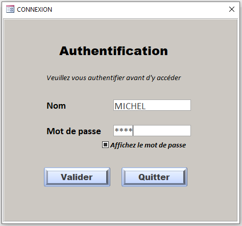

Solutions développées par DigitalSoft Congo
Gestion des élèves, paiements, dépenses, reçus et rapports financiers.
Voir le projetGestion des patients, consultations, rendez-vous, facturation et paiements.
Voir le projetGestion des étudiants, enseignants, cours et résultats académiques.

Cette solution permet d'automatiser les processus académiques et d'améliorer la gestion des établissements d'enseignement supérieur.
Voir le projet completGestion des membres, dîmes, offrandes et rapports financiers.
Projet développé par DigitalSoft Congo.